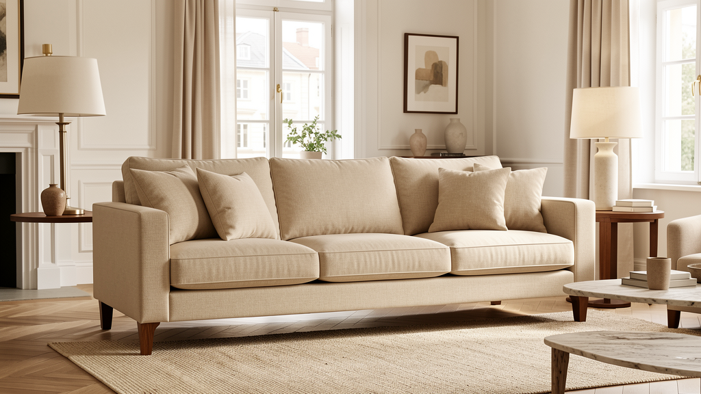
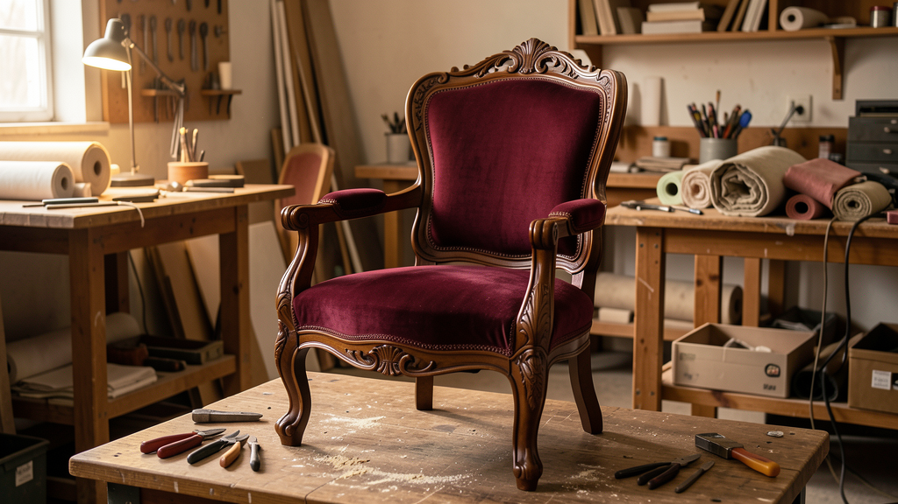
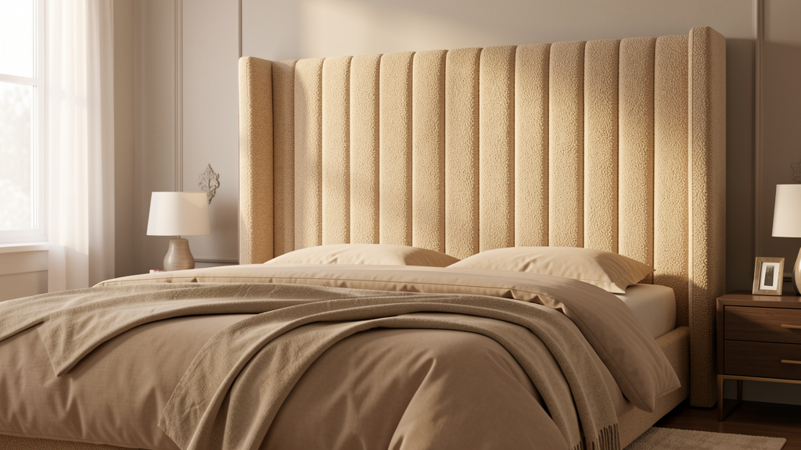
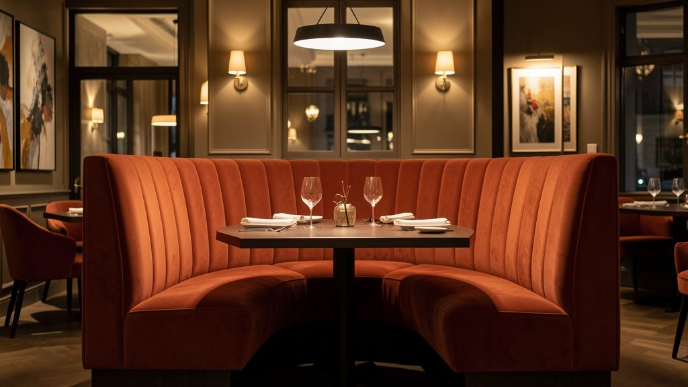
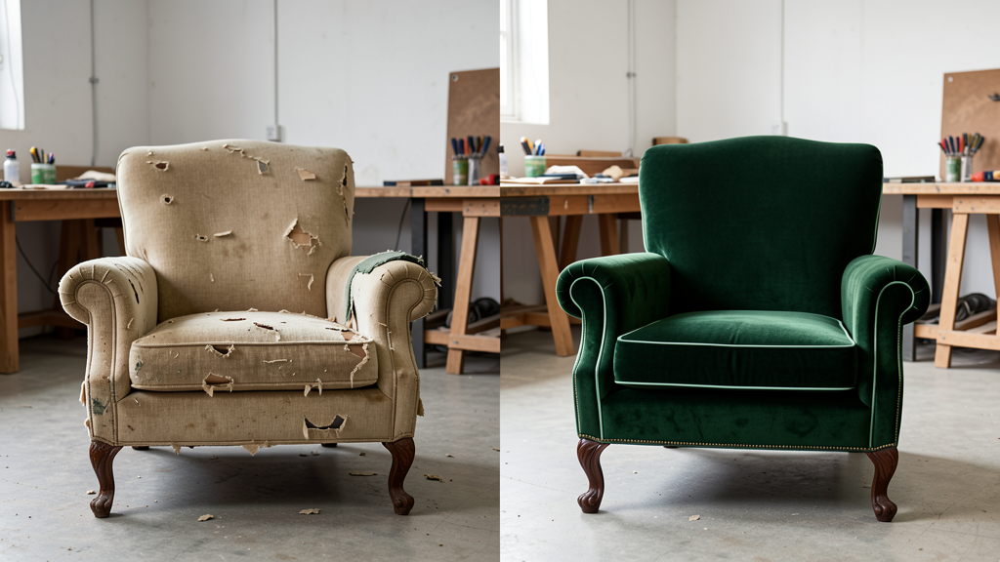

🚚
Szállítás és mozgatás
A működési területen egyeztetett időpontban segítünk a bútor biztonságos elszállításában és visszajuttatásában.
Kanapék, fotelek, antik bútorok és egyedi darabok teljes körű felújítása — gondos anyagválasztással és precíz kézi munkával.
Egy jó bútor szerkezete gyakran évtizedekkel túléli a kárpitját. Felmérjük a vázat, a rugózatot és a párnázást, majd olyan megoldást ajánlunk, amely visszaadja a darab kényelmét és karakterét.
A bútor szerkezetéhez, használatához és a kívánt megjelenéshez választjuk ki a megfelelő technológiát és kárpitanyagot.

Kanapék, fotelek és teljes garnitúrák szerkezeti és esztétikai megújítása.

Stílbútorok értékőrző helyreállítása hagyományos részletekkel.

Egyedi méretű, puha falpanelek, ágykeretek és elegáns fejvégek.

Éttermek, szállodák és irodák strapabíró, egységes kárpitozása.
Nem univerzális megoldásokat kínálunk. Más szövet kell egy mindennap használt családi kanapéra, egy éttermi padra vagy egy százéves fotelre. Ezért az anyagot, a belső rétegrendet és a javítás módját mindig a bútorhoz igazítjuk.
Egy szakszerűen felújított darab nemcsak szebb lesz: visszakapja a tartását, kényelmét és akár újabb évtizedekig használható marad.
Nem csak az új kárpitot készítjük el: a teljes folyamatban segítünk.
A működési területen egyeztetett időpontban segítünk a bútor biztonságos elszállításában és visszajuttatásában.
A helyiség hangulatához és a használat intenzitásához illő szövetet, bőrt, színt és részletmegoldást ajánlunk.
A kopott külső alatt sokszor értékes, menthető bútor rejtőzik.

A bútor típusa, mérete, állapota és néhány fénykép alapján előzetes tájékoztatást adunk, majd szükség esetén felmérést egyeztetünk.
Működési terület:
Budapest, Pest megye és Jász-Nagykun-Szolnok megye.